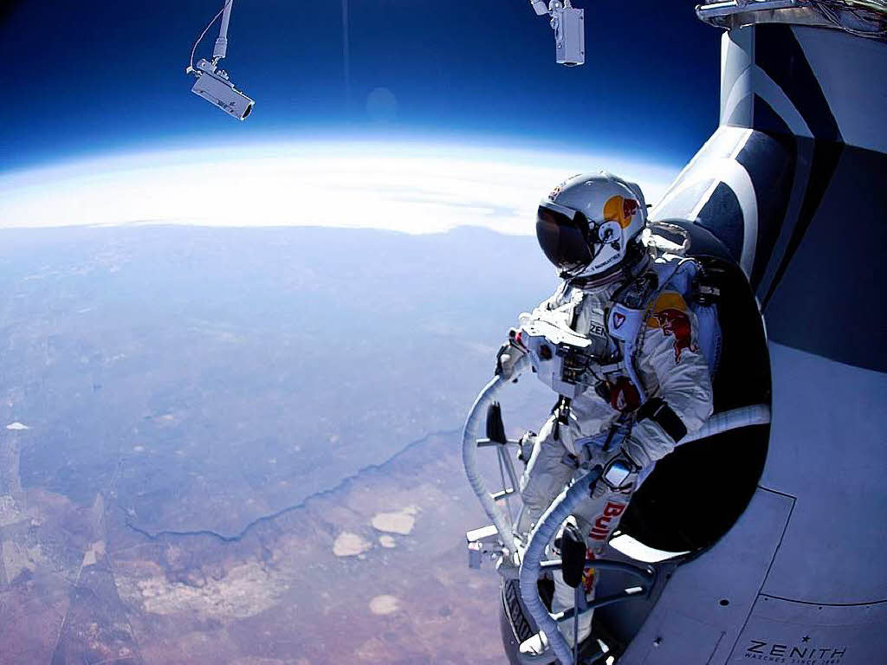

35
This event was watched live by over eight million people, setting the world record for the largest number of concurrent live streams in history. This record was only broken in 2012, when 8.3 million people live-streamed the London Olympics 2012 opening ceremony. The event itself set a world-record, which has only very recently been broken by Alan Eustace, a senior computer scientist at Google. What event?
